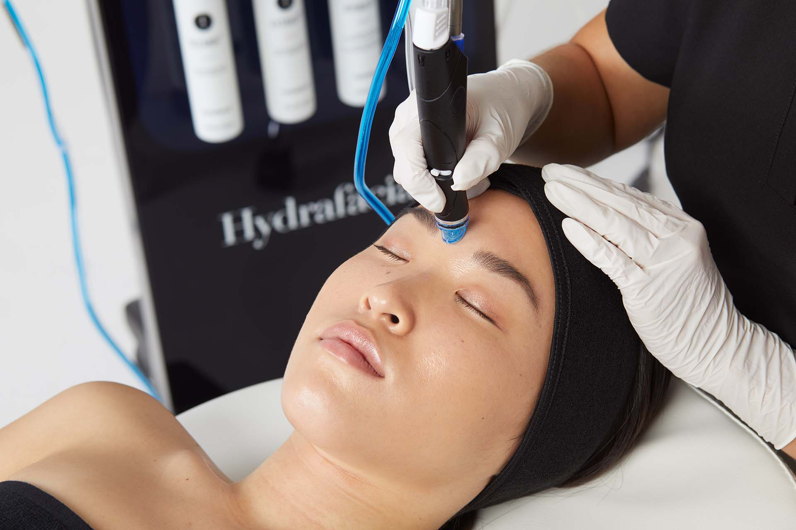
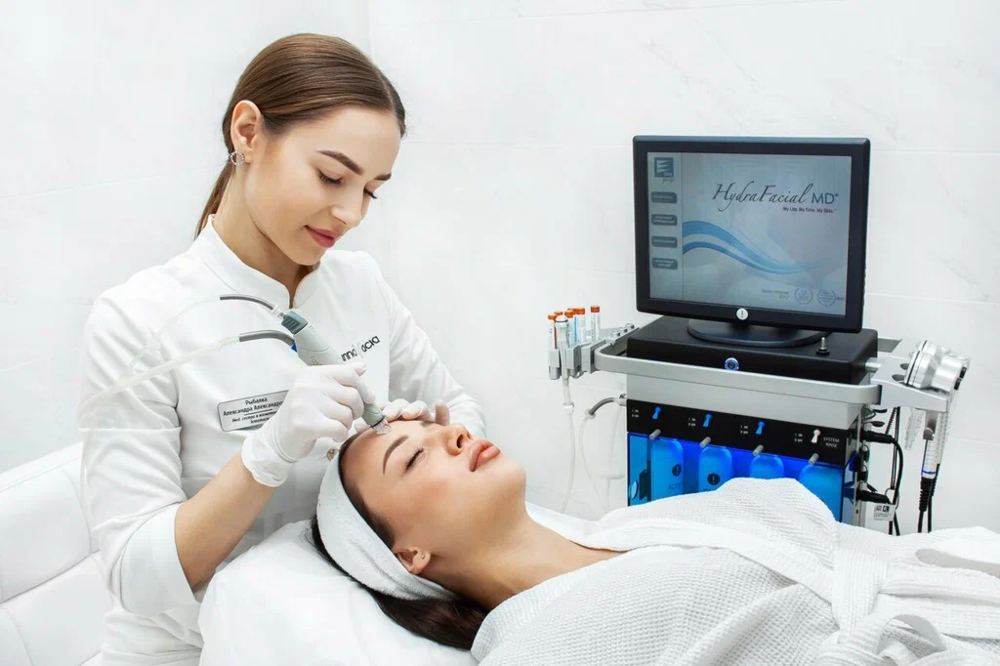
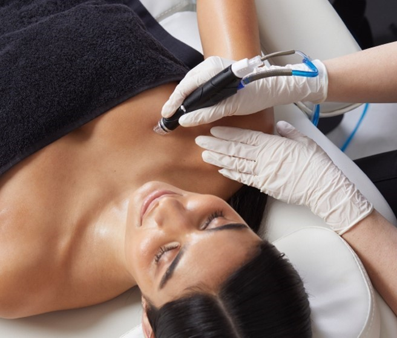

Treatments / Facials & Skin / HydraFacial
HydraFacial
Cleanse, exfoliate, extract and hydrate in one treatment. Skin looks clearer and brighter straight away, with no downtime.
- From £149
- 30–60 min
- No downtime
- All skin types
What HydraFacial does
HydraFacial is done with a patented device rather than by hand. Its Vortex-Fusion technology clears pores with gentle suction while it feeds serums into the skin. It's ideal for congestion, dullness, dehydration and fine lines.

The steps
Cleanse and exfoliate
Water-based exfoliation lifts dead skin to reveal fresh skin underneath.
Peel
A gentle acid peel loosens dirt and oil, without visible peeling.
Extract
Painless vortex suction clears blackheads and blocked pores.
Hydrate and protect
Antioxidants, peptides and hyaluronic acid plump and protect the skin.
Platinum starts with lymphatic drainage. Deluxe and Platinum finish with LED light therapy.
Why clients choose it
- A visible glow after one treatment, ideal before an event
- No downtime, so you can go straight back to your day
- Suits all skin types, including sensitive skin, after a quick consultation
- Verified HydraFacial provider
How it compares
- Choose HydraFacial for clear pores and an instant glow, before an event or as a monthly reset.
- Choose Environ instead for long-term change in ageing, sun damage or pigmentation.
- Choose CACI instead if firmness or jowls are your main concern.
Treatments and prices
Face
Our express treatment: cleanse, peel, extract and hydrate. Perfect for your first HydraFacial or a quick refresh.
Everything in the Signature, plus a booster serum chosen for your skin and a finishing LED light therapy.
Our most complete HydraFacial. It starts with lymphatic drainage to reduce puffiness, then the full Deluxe treatment and LED.
Lip and Eye
Exfoliates and hydrates for smoother, fuller-looking lips. Includes a take-home lip serum.
Brightens and hydrates the under-eye area and reduces the look of puffiness. Includes a take-home eye serum.
Scalp
Cleanses, exfoliates and hydrates the scalp, then infuses peptides to support fuller, healthier-looking hair.
Real results
Before you book
Please tell us before booking if any of these apply, and your therapist will confirm what's suitable: pregnancy or breastfeeding; active rashes, sunburn, cold sores or broken skin; isotretinoin (Roaccutane) in the last 6 months; prescription retinoids; an allergy to aspirin or salicylates; injectables or laser in the last 2 weeks.
For best results, once a month.
No. Most people find it relaxing. It feels like a cool, gentle suction.
Yes, though leaving your skin bare for the rest of the day gets the most from the serums.
